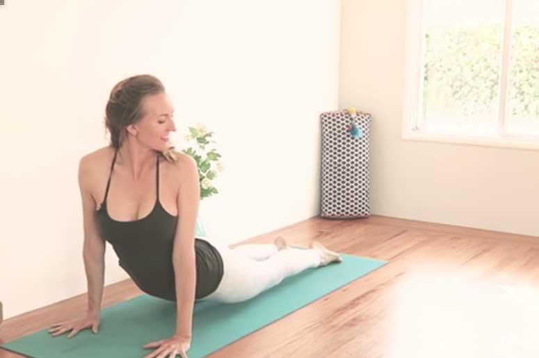

योग वृद्धो के लिए
योग न्यूनतम उपकरणों के साथ वृद्ध वयस्कों के स्वास्थ्य संबंधी मुद्दों और समग्र शारीरिक शक्ति में मदद कर सकता
है, जिससे यह जीवन में बाद के लिए एक बेहतरीन व्यायाम बन जाता है। योग कक्षाओं में होने वाली गतिविधियाँ उम्र
बढ़ने के साथ-साथ होने वाली सभी प्रकार की समस्याओं में मदद कर सकती हैं, जिनमें शामिल हैं:
रक्तचाप और पुराने जोड़ों के दर्द का प्रबंधन।
फेफड़ों की क्षमता, हड्डियों का घनत्व और गति की सीमा में वृद्धि।
परिसंचरण और सांस लेने की तकनीक में सुधार।
1. बद्धकोणासन
आसन करने का तरीका
- दंडासन से शुरुआत करें
- पैरों को मोड़ें और पैरों के तलवों को एक साथ जोड़ लें; घुटने बगल की ओर और पीठ सीधी।
- 15 सांसों तक रुकें।
- छुड़ाने के लिए पैरों को धीरे से
आसन के फ़ायदे
कूल्हों और कमर के आसपास गति की सीमा में सुधार करने के लिए यह एक बेहतरीन मुद्रा है - आंतरिक जांघ और पीठ
को फैलाना। यह शरीर के निचले हिस्से के दर्द में भी मदद करता है और वरिष्ठ नागरिकों के लिए योग में एक
बढ़िया अतिरिक्त है।
2. मार्जरीआसन
आसन करने का तरीका
- टेबलटॉप स्थिति से शुरू करें - हथेलियाँ कंधों के नीचे और घुटने कूल्हों के नीचे, तटस्थ रीढ़
- सांस अंदर लेते हुए पेट को नीचे झुकाएं और पीठ को झुकाएं, ठुड्डी को ऊपर उठाएं।
- सांस छोड़ते हुए पीठ को गोल करें और हथेलियों से जमीन में धकेलें
- 5-10 बार दोहराएं और फिर टेबलटॉप स्थिति पर लौट आएं
आसन के फ़ायदे
रीढ़ की गतिशीलता और लचीलेपन के लिए बढ़िया। यह तनाव से निपटने के लिए भी बहुत अच्छा है और उच्च रक्तचाप और अनिद्रा में मदद के लिए इसका सफलतापूर्वक उपयोग किया जा सकता है। पीठ दर्द से पीड़ित वरिष्ठ नागरिकों के लिए, शुरुआत करने के लिए यह एक बेहतरीन मुद्रा है।
3. परिवृत्त सुखासन
आसन करने का तरीका
- भुजाओं और कंधों को आराम देते हुए आराम से बैठने की मुद्रा से शुरुआत करें
- हाथों को ऊपर उठाने के लिए सांस अंदर लें। सांस छोड़ते हुए दाईं ओर मुड़ें, बायां हाथ दाहिने घुटने पर और दायां हाथ पीठ के पीछे रखें
- 5-10 सांसों के लिए इस मुद्रा में बने रहें
- आराम करने के लिए सांस छोड़ें। दूसरी तरफ दोहराएं।
आसन के फ़ायदे
रीढ़, गर्दन, कंधों और कूल्हों के लचीलेपन को बेहतर बनाने के लिए यह एक बेहतरीन मुद्रा है। यह पीठ के निचले हिस्से को मजबूत बनाता है और पाचन में सहायता के लिए बहुत अच्छा है।
4. वृक्षासन
आसन करने का तरीका
- पर्वतीय मुद्रा से शुरुआत करें।
- दाहिने घुटने को मोड़ने के लिए सांस अंदर लें। दाहिने पैर के तलवे को बाईं जांघ के अंदर, घुटने के ऊपर रखें।
- अपने सामने एक बिंदु को आंखों के समान स्तर पर देखें। रीढ़ की हड्डी को सीधा रखकर संतुलन बनाए रखें।
- धीरे-धीरे हथेलियों को नमस्कार मुद्रा में सिर के ऊपर लाएं। यहां 5-10 सांसें लें।
- दाहिने घुटने को सामने की ओर इंगित करने के लिए श्वास लें। साँस छोड़ते हुए दाएँ पैर को नीचे लाएँ। दूसरे पैर पर दोहराएँ
आसन के फ़ायदे
यह पैर, पीठ और बांहों को फैलाता है। यह योग शिक्षकों द्वारा अनुशंसित सबसे अच्छे खड़े होने वाले आसनों में से एक है और एकाग्रता और ध्यान केंद्रित करने में मदद करता है। पैरों और कोर में ताकत बनाने के लिए इस मुद्रा का अधिक समय तक अभ्यास करें।
5. ताड़ासन
आसन करने का तरीका
- पर्वतीय मुद्रा से शुरुआत करें।
- एक स्थिर बिंदु पर देखें। हाथों को ऊपर उठाएं और उंगलियों को ऊपर की ओर फंसा लें, हथेलियों को ऊपर की ओर पलटें
- श्वास लें और दोनों एड़ियों को चटाई से ऊपर उठाएं। पीठ को अधिक झुकाए बिना जितना संभव हो उतना खिंचाव करें।
- 5-10 सांसों के लिए यहां रुकें। एड़ियों को वापस नीचे टिकाने के लिए सांस छोड़ें और शुरुआती मुद्रा में लौट आएं
आसन के फ़ायदे
बाहों, छाती, पेट, रीढ़ और पैरों को फैलाने के लिए अच्छा है। यह एकाग्रता, ध्यान केंद्रित करने और मुद्रा में सुधार करने में मदद करता है, जागरूकता बढ़ाता है और सांस को स्थिर करता है। पाचन, रक्त परिसंचरण और पेट और पैरों में ताकत बनाने में मदद के लिए इस मुद्रा का अधिक समय तक अभ्यास करें।
6. पार्श्व उर्ध्व हस्तासन

आसन करने का तरीका
- पर्वतीय मुद्रा से शुरुआत करें।
- श्वास लें और नमस्कार मुद्रा में भुजाओं को बगल की ओर और सिर के ऊपर ले जाएं
- सांस छोड़ें और दाईं ओर झुकें, बाएं कंधे को पीछे खींचें और छाती को खुला रखें।
- 5-10 सांसों तक रुकें। छोड़ना, साँस छोड़ना और केंद्र में वापस आना। दूसरी तरफ दोहराएं।
आसन के फ़ायदे
यह खड़े होने की मुद्रा पार्श्व शरीर के लचीलेपन के लिए उत्कृष्ट है। यह आंतरिक अंग को उत्तेजित करता है और सभी प्रकार के शरीरों के लिए पाचन प्रक्रिया में सहायता करने के लिए बहुत अच्छा है।
7. सलम्बा भुजंगासन
आसन करने का तरीका
- पैरों को कूल्हे की दूरी पर और माथे को ज़मीन पर रखकर अपने पेट के बल शुरू करें।
- ऊपरी शरीर को ऊपर उठाएं। अपने अग्रबाहुओं को कंधे की दूरी पर और एक दूसरे के समानांतर रखें। कंधे को कानों से दूर ले जाएं।
- श्वास लें और सिर को ऊपर उठाएं। यह सुनिश्चित करने के लिए कि गर्दन का पिछला भाग लंबा है, अपनी ठुड्डी को मोड़ें
- छाती के मध्य भाग को आगे की ओर खींचें। यहां कुछ गहरी आरामदायक सांसें लें।
- सांस छोड़ते हुए धीरे से अपने पेट, छाती और सिर को वापस फर्श पर लाएं।
आसन के फ़ायदे
यह पीठ और गर्दन के लिए सबसे आरामदायक आसन में से एक है। यह पेट के अंगों को भी उत्तेजित करता है और छाती और कंधों को फैलाता है और पीठ को ताकत देता है।
8. पर्वत भुजंगासन
आसन करने का तरीका
- पेट और माथे को चटाई पर रखकर, पैरों को योगा मैट जितना चौड़ा करके और हथेलियों को पसलियों के किनारे रखकर, प्रवण स्थिति में शुरुआत करें।
- सांस लेते हुए छाती और सिर को ऊपर उठाएं जब तक कि भुजाएं सीधी न हो जाएं। कंधे उचकाने से बचें
- दाहिनी ओर मुड़ने के लिए सांस छोड़ें। 3-5 सांसों के लिए यहां रुकें।
- सांस लेते हुए वापस केंद्र की ओर आएं और सांस छोड़ते हुए वापस नीचे आ जाएं। दूसरी तरफ दोहराएं।
आसन के फ़ायदे
पीठ का लचीलापन बढ़ाने के लिए यह आसन बहुत अच्छा है। कब्ज से पीड़ित लोगों के लिए व्यायाम कार्यक्रम में इसे शामिल करना बहुत अच्छा है - यह लीवर और किडनी की मालिश करता है और उन्हें उत्तेजित करता है